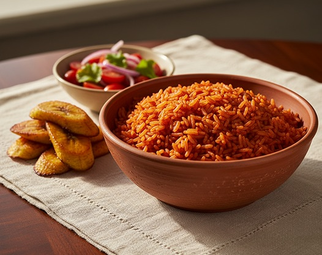
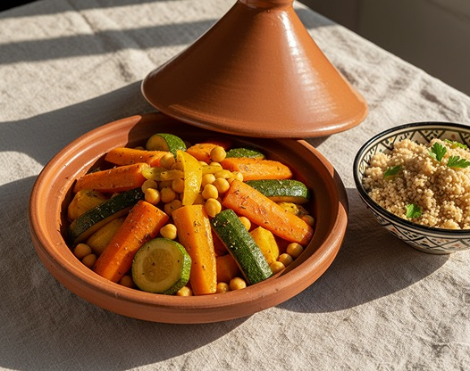

A taste of place
Follow the flavor.
Not borders around a cuisine, but doors into a conversation. Begin with four regions, then look closer: every country, community, and home has its own story.

A glimpse of Senegal, Ghana & Nigeria
West Africa
Grains, greens & the generous pot
From Senegalese ceebu jën to the many jollof traditions of Ghana and Nigeria, rice tells only part of the story. Millet, fonio, yam, leafy greens, and long-simmered soups anchor very different everyday tables. Fermented seasonings bring depth; shared bowls bring people close.
- In the pantry
- Millet · Fonio · Yam · Okra · Palm oil
- At the table
- Ceebu jën · Jollof rice · Egusi soup

A glimpse of Kenya, Uganda, Rwanda & Tanzania
East Africa
Highland harvests, coastal journeys
Uganda’s matoke, Kenyan nyama choma, and Rwandan brochettes each tell a distinct story. Along the Swahili coast, coconut, rice, and spices reflect centuries of exchange across the Indian Ocean. Inland, beans, grains, and cooking bananas take many forms.
- In the pantry
- Cooking bananas · Maize · Beans · Coconut · Cardamom
- At the table
- Matoke · Nyama Choma · Brochettes · Pilau

A glimpse of Morocco, Tunisia & Egypt
North Africa
Fragrant spice, patient cooking
Slow-cooked Moroccan tagines sit within a much wider landscape of food. Tunisia’s harissa brings warmth to grains and stews; Egypt’s ful medames turns fava beans into a beloved daily meal. Amazigh, Arab, Mediterranean, and other histories meet in kitchens that remain distinctly local.
- In the pantry
- Couscous · Fava beans · Preserved lemon · Cumin · Olive oil
- At the table
- Vegetable tagine · Couscous · Ful medames

A glimpse of South Africa, Zimbabwe & Namibia
Southern Africa
Open fires, layered histories
A South African braai is both a way of cooking and a reason to gather. In Zimbabwe, sadza is a daily staple, often paired with greens or stew. Indigenous foodways, migration, and colonial histories have shaped a region whose flavors cannot be reduced to a single dish.
- In the pantry
- Maize meal · Sorghum · Leafy greens · Beans · Dried fruit
- At the table
- Bobotie · Sadza with greens · Chakalaka
Beyond these four regions
Central Africa belongs at the table.
Our starting points are not a complete map. Meet pondu, a cassava-leaf stew rooted in Congolese cooking, in the recipe collection.